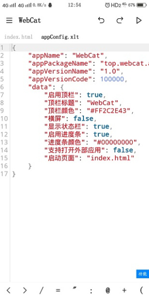
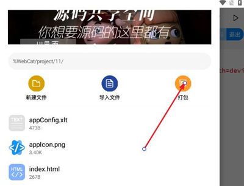

WebCat 5.21 原理解析：一部安卓手机，为什么能装下整套网页开发链
手机写网页、手机打包 APK——WebCat 把编辑器、运行时和打包器塞进一个 10MB 的安装包。本文拆解它的内部架构与技术取舍，看懂这条完整链路是怎么在移动端跑起来的。
手机上做网页开发，这听起来像是一个玩笑。
不是说做不到——手机浏览器能打开任何网页，手机上也能装任何文本编辑器。但把它们串成一条完整链路：从新建工程、写 HTML/CSS/JS、实时预览、到最终打包成 APK 装回手机上——这件事在 WebCat 出现之前，要么需要一台电脑当中转站，要么就是一堆工具拼接起来跑不通。
WebCat 5.21 的厉害之处——你去webcat官网扫一眼功能列表就明白——不在于它"有这些功能"，而在于它把这些功能装进了一个 10.5MB 的安卓安装包，让整条开发链在单台手机上闭环。我翻了一遍它的包信息和编辑器实现细节，想搞清楚这件事到底是怎么做到的——以及它的代价在哪里。
一个工具的三个身份：编辑器、浏览器、打包器
WebCat 本质上是三个东西的合体。理解这一点，才能看懂它为什么能在手机上跑通网页开发全流程。
第一身份：代码编辑器。这是基础。它得能在触屏上写代码、语法高亮、自动补全、格式化——跟你在电脑上用 VS Code 体验差不多。5.21 版本开始支持 JSON 文件的专门编辑，这意味着 manifest.json（打包 APK 的核心配置文件）里那些大括号、引号、逗号，终于能在编辑器里被正确着色和校验了。之前版本没有这个支持，很多人改 manifest 时逗号漏写、引号配对错误，要等到打包 APK 才发现报错。

第二身份：运行时浏览器。WebCat 内置了一个 WebView 预览面板——你写的 HTML/JS/CSS 不需要传到任何服务器，直接在应用内部就能渲染预览。这不是"调用系统浏览器打开本地文件"那么简单，而是 WebView 引擎作为 WebCat 的一个内置组件常驻，所以预览能做到实时。
第三身份：APK 打包器。这是最神奇的部分——它把你的网页工程"包装"进一个安卓安装包。打包不是简单压缩文件就行，它需要一套完整的 APK 生成逻辑：处理 AndroidManifest.xml、生成签名、处理图标多分辨率适配、最终输出可安装的 APK 文件。WebCat 的打包界面只需要点几下——但背后的 APK 构建链是一整套标准工具链的精简移植。
三个身份共享同一套工程文件系统。你在编辑器里改 HTML，点预览就能看到效果，点打包就能生成 APK——这三个动作操作的是同一份磁盘文件，没有中间态，没有同步延迟。这就是"闭环"的含义。
数据如何在三个身份之间流动
想象一下你新建一个 WebCat 工程后的操作：
新建工程时，编辑器身份在应用私有存储里创建一个项目目录，写入初始的 index.html、style.css、manifest.json。此时打包器身份也同步拿到了 manifest.json（打包的配置入口），预览身份则什么都不做——等文件变了再说。
写代码时，只有编辑器身份在工作。文件保存后，文件系统发生变化。
点预览时，预览身份监听文件变化，用内置 WebView 重新加载 index.html——这跟浏览器刷新一个 URL 没区别，只是 URL 变成了本地 file:// 路径。
点打包时，打包器身份登场。它先验证 manifest.json 的 JSON 格式（5.21 新增的语法高亮在这里也起了校验作用），然后：把整个工程目录的文件结构映射到 APK 的 assets 目录 → 处理 icons 字段里声明的各分辨率图标 → 生成 AndroidManifest.xml（WebCat 内部格式转安卓原生格式）→ 签名 → 输出 APK。
这个数据流是单向的：编辑器产出文件 → 打包器和预览器消费文件。没有复杂的进程间通信，没有实时同步的数据库，就是纯文件操作的观察者模式。这种设计的好处是简单、稳定、体积小——代价是你不能指望"预览器帮你热重载到像素级"，WebCat 的实时预览是文件级的，不是代码变更级的。
为什么只有 10MB？它砍掉了什么
WebCat 的安装包体积在官方下载页面标注约 10.5MB。对比一下：VS Code 本体加上 Electron 运行时要两三百 MB，Android Studio 更是几个 G。WebCat 能塞进 10MB，是因为它在设计上做了几个关键的取舍。
取舍一：用 WebView 当运行时，而不是自己实现浏览器内核。Android 系统自带 WebView——所有安卓设备都有。WebCat 不需要打包一个 Chromium 进去，直接调用系统 WebView 组件就行。这省掉了几十上百 MB 的内核体积。代价是：WebView 的版本由系统决定，老旧设备的 WebView 内核可能不支持一些较新的 CSS/JS 特性，表现跟 Chrome 或现代浏览器有差异。
取舍二：编辑器内核是轻量实现。WebCat 的代码编辑器不是 Monaco（VS Code 用的那个，本身就有好几 MB），也不是基于 TreeSitter 的重型语法引擎。从 5.21 新增的 JSON 编辑支持来看，它的语法分析是按文件类型做关键词着色和简单规则校验——够用，但不做深度 AST 分析。代价是：复杂的跨文件引用检查、类型推断、智能重构，WebCat 做不了。它只做"能让你不手写出低级错误"级别的辅助。
取舍三：APK 打包链的极度精简。完整的安卓构建工具链（Android Gradle Plugin + D8 + AAPT2 + apksigner）加起来要上百 MB。WebCat 肯定用了某种精简实现——它的 manifest.json 格式就是为了简化打包流程而设计的，不是标准的 AndroidManifest.xml XML 格式。这种简化让它能在手机端生成可安装 APK，但代价是：打包出来的 APK 是"壳"的性质——网页内容装进 assets，WebView 作为启动 Activity，没有原生组件，不支持复杂的安卓 API 调用。
它真的"够用"吗——几个会翻车的场景
WebCat 的设计前提很明确：你做的是网页，打包成 APK 是为了"网页套个壳装手机上"。如果你的需求超出了这个边界，就会遇到问题。
第一个容易翻车的：大型工程。从webcat文档的打包失败排查章节可以看到，"工程文件太大或太多"是高频原因——几十上百 MB 的项目、带 node_modules 的目录，手机内存可能扛不住，打包超时就卡住了。解法是手动清理不需要打包的文件，或者分步骤导出。
第二个：PHP 后端依赖。这是新手最容易踩的坑之一。WebCat 可以编辑 PHP 文件，但打包成 APK 之后——APK 里没有 PHP 运行时。你写的 PHP 代码变成了静态文本。所以依赖 PHP 后端逻辑的项目在 APK 里会直接白屏或报错。WebCat 的 PHP 编辑功能更像是"顺带支持你能在手机上看看 PHP 代码"，不是让你在手机上跑 PHP 后端。
第三个：manifest.json 的手动改坏。5.21 版本之前，没有 JSON 编辑支持时，manifest.json 格式错误（大括号没配对、逗号漏写）是打包失败的头号原因。5.21 加了语法高亮和格式化之后这个问题缓解了，但"字段值格式不对"（比如版本号写成中文数字）还是会让打包挂掉——WebCat 只做 JSON 语法校验，不做语义校验。

这套原理意味着什么——谁该用、谁不该用
我对 WebCat 5.21 的判断是：它是一个"网页→安卓壳"的便携工作流工具，不是一个完整的移动端 IDE。
适合用它的场景：
- 你做的是纯静态网页（HTML/CSS/JS），想快速套个 APK 壳装自己手机上跑
- 出门在外只有手机，想改几行代码、重新打包、快速验证效果
- 你已经熟悉 WebCat 的 manifest.json 配置习惯，不折腾原生安卓 API
不太适合的场景：
- 你需要调用原生安卓 API（相机、蓝牙、通知）——WebCat 的 APK 打包不支持，得用专业的安卓构建工具链
- 你维护的是大型项目——手机内存、文件管理、代码阅读体验都会受限
- 你需要 PHP/Node.js 这类后端运行时——WebCat 打包出来的 APK 里没有这些
写在最后
把编辑器、浏览器内核和 APK 打包链装进一部安卓手机，这件事本身不是什么技术奇迹——WebView 省了内核体积，编辑器用轻量实现，打包链做了极度精简。真正聪明的是它在三个身份之间用纯文件系统的观察者模式串起来——没有复杂的中间层，没有进程间通信，就是"编辑器写文件、预览器和打包器读文件"这套朴素逻辑。
这种设计让它能塞进 10MB，能在 5 岁以上的安卓设备上跑起来，能让"手机做网页开发"从玩笑变成现实。但它的边界也因此很清晰：你换一套原理设计，要么体积膨胀，要么功能缩水。WebCat 选了一个对移动端开发者来说刚刚好的平衡点。如果你想对着源码和配置文件细看这套设计，资料同时归档在GitHub、Gitee和GitCode三个仓库，挑哪个顺手用哪个。